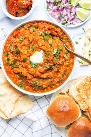

Pav bhaji
Ingredients
|
MethodsHeat butter and oil together in a pan. Add chopped onions and sauté until light golden. Add ginger-garlic paste and cook for a minute until raw smell disappears. Add capsicum and sauté for 2–3 minutes until slightly soft. Add tomatoes, turmeric, chilli powder, pav bhaji masala, and salt. Cook until the mixture turns soft and oil starts separating. Add boiled potatoes, cauliflower, and peas. Mash everything well using a potato masher. Add a little water to get a thick but smooth consistency. Simmer for 8–10 minutes, stirring often. Finish with lemon juice and fresh coriander. Add a knob of butter on top. |
 |
Pav PreparationSlit pav horizontally.Toast on a hot tawa with butter until golden and crisp. |
ServingServe hot bhaji topped with butter, chopped onion, lemon wedge, and toasted pav on the side. This version is street-style, rich, and full of flavor—perfect for dinner or a weekend treat.F |